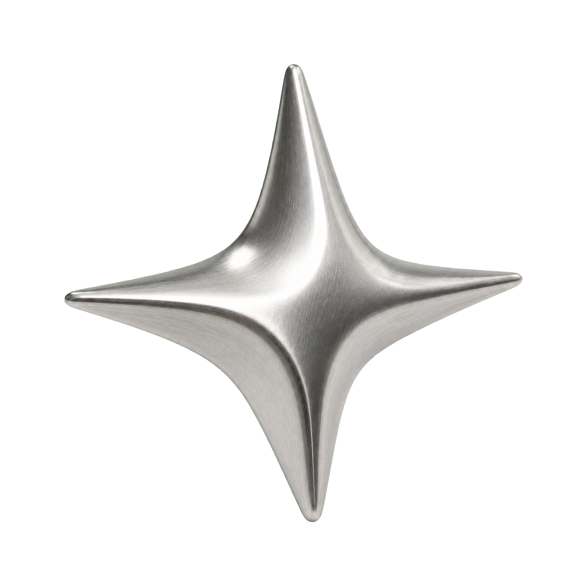
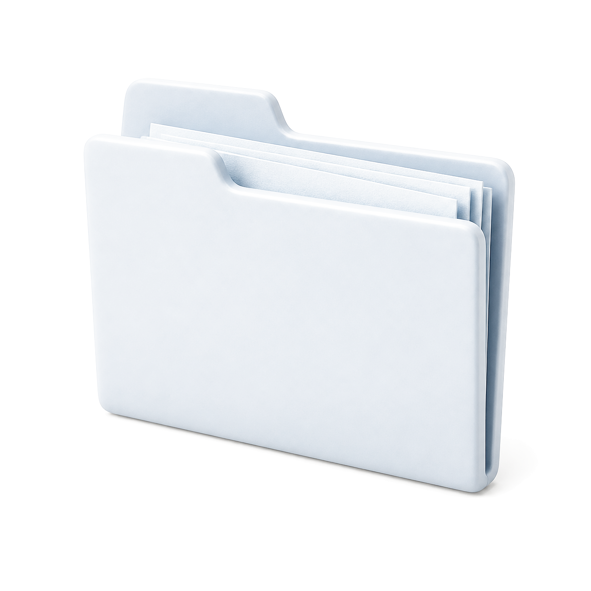

底图
暖白、低对比点阵或淡粉蓝空气感。不能变成噪音。
Rustfield personal visual language · v1.1
这是一份可以直接翻看的完整视觉规范。它把颜色、字体、窗口、组件、信息关系、材质、动效和输出格式放在同一条阅读路径里。
The main rule
每一页只保留一个主要观点。所有粉色、材质和动效都要帮助观众更快理解它。
01 / Color + Material
粉色负责重点、当前状态和温度；蓝色负责结构、标题栏和路径；灰色负责窗口机身。三者不平均分配。
#F8F7F3 / canvas#DCEBFF / blue-soft#31589E / structure#FFE0EC / soft signal#F08AB7 / active#C6C8CD / frame02 / Type + Spacing
中文标题不追求挤满画面。标题、正文、标签和辅助说明要有可感知的比例差，留白是视觉语言的一部分。
Type scale / 16:9
一句话
先被记住
再让结构解释它。
正文 16–18px，行高 1.55–1.75；标题根据介质调整，但不要让字挤成一坨。小红书卡片可以更大胆，公众号正文必须优先阅读舒适度。
UTILITY / 10–12px / 只做标签，不做正文Spacing scale / 8pt rhythm
默认间距从 8 的倍数开始；关键区域用 40–72px 留出呼吸，不把所有内容锁在中心点。
03 / Layer + Window
16:9 页面默认遵循“底图 → 灰色窗口 → 信息 → 语义点睛物”。3:4 与公众号使用自己的阅读结构，不强行套横向窗口。
暖白、低对比点阵或淡粉蓝空气感。不能变成噪音。
外框有体积，蓝色标题栏在内部，三枚控制符保持结构记忆。
主标题、解释、流程或证据。这里决定观众先看什么。
箭头、银灰星体、光标或黑猫，只在有语义时出现。
Window hierarchy / options
04 / UI language
按钮、标签、状态、输入框、Tab 和进度条都应该拥有真实功能或真实语义。没有动作，就不要伪装成按钮。
Controls / actions
States / feedback
粉色表示当前选择，蓝色表示结构与可继续的路径，灰色表示未激活或次要信息。
05 / Information forms
流程不是表格，决策不是三张卡，对比不是左右堆文字。组件首先表达关系，其次才表达风格。
01 / Flow
连接线只位于节点区域，不穿过标题和正文。
02 / Decision tree
圆角和边框要成套出现，重点路径统一使用粉色。
03 / Compare
只保留一个判断维度，不做密集黑色表格。
04 / Input → Output
参考、配色、构图
一套可复用语言
箭头表达转换，不作为孤立装饰。
05 / Evidence
文字要么在框内，要么完全在框外，不与边界冲突。
06 / Data narrative
一种图形、一个标注、一句结论，不做仪表盘。
06 / Applied Tutorial Example
这是完整横向教程应用示例：一个复古窗口、一个明确观点、一条可读流程。它把前面的色彩、层级、箭头和粉色信号放进同一张画面。
01 / 先定义你的审美输入
先建立风格、参考、模型与镜头的共同语言，再让工具参与生成。流程越清楚，结果越不容易随机。
07 / Material + texture
银灰星体、语义工具物、光标和 CRT 都必须有意义。它们不能挡住正文，也不能只是为了填空。
Silver metal / marker
用于转折、重点和记忆点。统一光向，默认单色银灰。

Reference folder / collect
对应收集、归类与调用参考资料。只有语义匹配时才持续轻微漂浮。

Chrome cursor / point
指向当前选择、证据或路径，不做随机贴图。
CRT / local only
只在屏幕、素材对比和转场中使用，不穿过正文。
LOCAL CRT08 / Motion system
先确保静态状态成立，再选择一种主动作。窗口进入、文字顺序、路径推进和有语义物件的持续轻动可以共存，但不同时抢主角。
Enter / 120–220ms
轻微位移 + 透明度，不把页面拆成烟花。
Float / 6–10s
只给有语义的小物件，振幅 6–18px。
Focus / 12–24s
银灰材质有体积、光线和留白，默认不混粉蓝渐变。
Texture / local
CRT 只进入局部屏幕，不铺满正文。
09 / Output formats
内容关系可以复用，但画布、阅读速度和交互方式必须重新安排。不要把 16:9 窗口原样缩成 3:4。
灰色窗口 + 蓝色标题栏 + 一个主要机制。默认点击推进。
封面、观点、步骤、证据和收束页按阅读动作变化。
正文优先，输出 section + inline style，不带窗口外壳。
一个主张、一个行动、有限的内容方向和一个记忆点。
导航、当前任务、证据和下一步要有明确层级。
10 / Component atlas
以下 52 个组件族是完整选择范围。状态只是使用建议：核心、条件、静态或避免。先选信息关系，再选组件。
杂志裁切、编号、标签、观点。
章节编号、标题和语义重点。
把一句关键判断放大。
低幅进入，静态状态完整。
深色只做局部代码屏。
大字结论，不加第二观点。
只用于观点往返，不做聊天装饰。
大编号 + 清晰标题。
短章节导航，不做复杂菜单。
三个方向，不做圆点平铺。
节点、箭头、当前粉色信号。
只保留一条判断维度。
团队关系需要时使用。
真实筛选才使用。
知识、参考资料和阅读清单。
只在交互预览中启用。
连续创作或时间记录。
真实动作才使用。
版式对照，不做黑色表格。
少量状态，不铺满圆点。
旅程、阶段或路线隐喻。
地点与体验内容。
长文或资料汇总。
一个句子 + 一张大图。
技术语境才使用等宽字体。
真实横向浏览才使用。
多状态同位比较。
FAQ 或层级说明。
前后对照才使用。
资料堆或版本堆，不遮正文。
正反面内容必须有关系。
隐藏信息需要探索时使用。
暗底只占局部章节。
编号不能代替标题。
当前项用粉色。
视频或图片集合导航。
与 31 合并管理。
结论或收尾使用。
个人介绍或角色记忆页。
内容少但需要记忆点。
只标一个当前节点。
有循环关系才使用。
@锈原 Rustfield 与方向标签。
一个语义星标，不做闪烁墙。
概念变形确实是内容时使用。
与去 AI 味和克制动效冲突。
代码或逐字引入才使用。
视频标题或节奏变化。
像素黑猫或复古素材语境。
粉色底线或短色块。
解释有趣概念或轻松结论。
环形文字确有路径意义时使用。
Final rule
如果答案是“会”，先删。复古窗口是结构，粉蓝是信号，材质是标点；真正留下来的应该是你的判断。